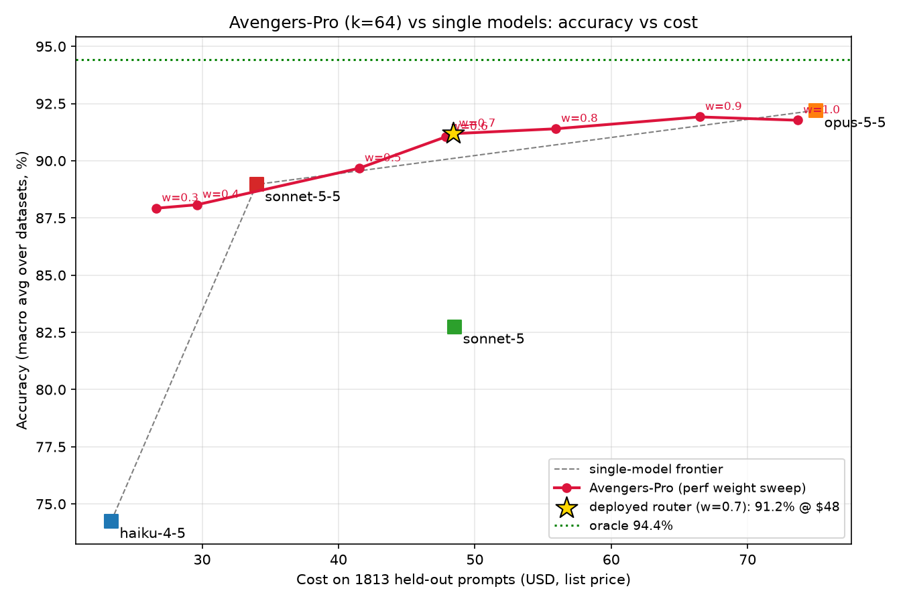

11
How we evaluate
Three tests, in order. Each can stop the project.
Evaluation answers three questions in sequence. Is there value to capture? (offline, from branch labels). Can a policy predict it? (offline, held-out repositories). Does the frozen policy save money in real episodes? (closed loop, test split). Only the third is the result; the first two decide whether to keep going.
FIG 4Evaluation pipeline
Test 1 and Test 2 · offline
What each offline test measures.
| Test | Question | Measured as | Passes when |
|---|---|---|---|
| 1 · Value exists | Does the best action depend on the checkpoint state? | Δa = Qa − Qcheap per checkpoint, averaged over k trials, split by trigger and session stage | The best action differs across states by more than trial noise (paired CIs exclude zero in at least two strata) |
| 1 · Packet matters | Does the packet change the outcome of a switch? | Y and Crem for FULL vs COMPACT vs DROP from the same snapshot | Packet effect differs by state, not just by switch direction (needed for the D3/D4 claim) |
| 2 · Calibrated | Are predicted success rates trustworthy? | Brier score, log loss and reliability curve of p̂a on held-out dev repositories | Beats a task-only predictor with the same capacity and data |
| 2 · Ranks well | Does Q̂ pick the right action? | Regret against the sampled-branch hindsight selector, measured on independent repeats | Regret lower than every fixed action and the per-call predictor |
Test 3 · closed loop
Same harness, same menu, only the policy changes.
Each policy plugs into the same decide() call inside the gateway (Fig. 1); switching policy is a gateway config change, and the agent is the same. It sees the same features, model pool and packet menu, with the same caps and the same training data where it learns. A comparison that changes anything else is not reported as a policy comparison.
| Baseline | When it decides | What it chooses | What beating it shows |
|---|---|---|---|
| Always Cheap / always Strong | Never | One model | The two ends of the cost–success curve; anchor for gap recovered |
| LiteLLM complexity router | Each request, prompt only | Model tier | Gains over what this repository runs today |
| Avengers-Pro (3 variants) | Request · per call · checkpoint state | Model | Gains are not just from a better request router |
| vLLM SR session-aware | Each turn, with locks and hand-tuned switch penalties | Model | Measured continuation value beats hand-tuned penalties |
| Fixed-prefix(K) | Once, after K calls (K tuned on dev) | Model + packet | Adaptive timing beats one fixed decision point (A4) |
| Per-call, same predictor | Every unlocked boundary, may hold | Model + packet | Checkpoints are not just fewer decisions (A4) |
| MTRouter-like | Each turn, outcome-trained | Model | Joint packet choice adds value over model-only routing |
| ReDAct-style deferral | Uncertain steps, then back to Cheap | Model, one step | Remaining-episode value beats local risk |
| Best fixed packet (Handoff Tax) | CPR's timing | Model; packet fixed per direction | Choosing the packet per state beats the best fixed packet (D3) |
| Composed selectors | CPR's timing | Model and packet tuned separately | Choosing them jointly beats tuning them separately (D4) |
FIG 5The timing comparison (rubric A4)
The verdict
How a result is read.
The claim is accepted only if the frozen policy passes all three checks on the test split, against the strongest baseline, with every cost included.
| Check | Rule (fixed before test) | Example |
|---|---|---|
| Success kept | Lower CI bound of YCPR − Yref ≥ −ε | ε = 0.02 means at most two percentage points below always-Strong |
| Cost saved | Upper CI bound of CCPR − Cbest baseline < 0, both meeting the success rule | Cheaper than the cheapest baseline that also keeps success |
| Latency within budget | Mean episode wall time ≤ BL; report p50 and p95 | Includes tool waits, packet calls and router time |
| Also reported | Gap recovered (Yπ − Ycheap) / (Ystrong − Ycheap) with Cπ / Cstrong; switches, thrash, lock-blocked switches, cache tokens lost | Shows how the saving was made, not just that it was |
12
Measurements and rules
Test the claim—not a weaker opponent.
Each phase has a matched action space and baselines. Offline prediction is diagnostic; the decisive result is a fresh, closed-loop episode comparison including routing, context-transfer, and cache-loss overhead.
Comparison families by phase
- Always Cheap / always Strong: initial-state endpoints under identical scaffold and episode caps.
- Task-only and simple rules: initial Strong-success/difficulty predictors, repeated-failure escalation, and fixed stage/model tables where applicable.
- Avengers-Pro: original-request, retrained per-call, and retrained checkpoint-state variants.
- vLLM Semantic Router (session-aware): a versioned, explicitly configured baseline with its tool-loop/provider-state locks, cache-aware switch cost, and resets—not an unspecified product label.
- Fixed-prefix(K): one decision after K calls, K chosen on dev as a percentile of the starting model's step count (Handoff Tax §3.2); same predictor and menu as CPR.
- ReDAct-style deferral: local uncertainty/risk intervention followed by Cheap; distinguish faithful reproduction from a logit-free analogue.
- MTRouter-like outcome-aware per-call: history and terminal labels, with a stay action. Equalize available state, model pool, and training budget.
- Phase 2 context policies: always-full, fixed compact/retrieval packets, and independently tuned model/context selectors versus joint selection.
- Phase 3 composed controller: independently tuned timing + model + context policies, under the same evidence, data, pool, and session caps as the integrated learner.
What to measure
Primary operating pointMinimize total cost subject to a predeclared non-inferiority margin on terminal success, with an explicit latency budget.
Matched ablations
Hold state encoding and value prediction fixed across timing ablations in Phase 1. Phase 2 crosses model and context choices while fixing the reasoning budget. Phase 3 compares component policies, their simple composition, and the integrated controller. Report training volume and all overhead; do not attribute representation or extra-data gains to timing.
Statistical discipline
Choose prices, budgets, margins, thresholds, and primary outcomes before test evaluation. Use repeated runs and task/repository-clustered paired confidence intervals. Report absolute success-rate loss and cost reduction, failures, and all operating points; tune only on development data.
If reporting “retain 95% or 98% of Strong’s success,” define it as a relative success-rate target, not 95% task accuracy. Do not promise exact equality or superiority in advance.
13
Oracle and cost
Hindsight is a diagnostic—not a deployable policy.
A request-level “perfect oracle” uses known candidate outcomes. Here the diagnostic chooses among only the sampled checkpoint actions under their stated continuation protocols. Report it separately by phase and action menu; a Phase 1 selector says nothing about the optimum multi-revision policy.
Define the local hindsight selector
a*i = argmaxa ∈ Ai [p̂selectia − λĉselectia − ηℓ̂selectia]
Ai contains sampled feasible branches. Estimate success probability and mean resource use with repeated continuations; specify tie-breaking. Select with one repetition set and report with independent repetitions to reduce winner’s-curse bias.
Report every checkpoint, including cases where no branch succeeds. One lucky success among many rollouts is not the allocation’s expected success probability.
Keep three numbers separate
Deployment route cost: sunk prefix + selected remaining branch cost (including its transfer) + router overhead not already included. Never charge handoff twice.
Data-collection cost: actual prefix runs + all branch continuations and repetitions + snapshots, infrastructure, annotations, and evaluation. Do not sum the prefix again for each clone.
Diagnostic performance: independent outcome estimates for the selected sampled branch. A budget-constrained selector and an unconstrained success oracle are different diagnostics.
14
Feasibility and gates
Practical to pilot. Not yet justified to scale.
Small action space
- One agent, two measured model endpoints.
- A measured continuation menu before adaptive timing.
- Quiescent, reproducible software sandboxes.
- Small supervised predictors before complex RL.
- A pilot sized to measure effect and noise before committing a larger data budget.
Unbounded control
- Multi-agent graphs and arbitrary model pools.
- Exhaustive branching across a whole episode.
- Guaranteed frontier success at lower cost.
- Assumed millisecond end-to-end router latency.
- A fixed dollar budget derived from an unmeasured per-rollout price.
Collection bill
prefix runs
+ Σ continuation trials
+ infrastructure
+ annotation / evaluation
+ Σ continuation trials
+ infrastructure
+ annotation / evaluation
Size the full budget from M2's measured token/cache usage and runtimes, using mean and tail estimates. Prices, model versions, repeated trials, failed branches, storage, and snapshot restoration must appear in the estimate.
Build order
Seven milestones, each with a gate.
No milestone starts until the one before it passes. A failed gate is reported as a finding and stops or reshapes the project.
- M0
Instrumentation
Gateway plugin: session binding, tool-loop and provider-state locks, four-bucket usage logging, worst-case cost reservation, packet rewrite and persistence.
GateLogged per-call cost matches the provider's billed usage on a sample of calls. - M1
Checkpoints and snapshots
Trigger detection and
decide()in the gateway plugin; harness adapter with restart and snapshot callbacks; snapshot service with the replay-equivalence check.GateA declared share of pilot snapshots (for example ≥ 95%) pass replay; failures are understood. - M2
Phase 1a pilot
Branch runner, evaluator and label store. For example 60 tasks × 3 checkpoints × 5 branches × 3 seeds = 2,700 continuations.
Gate · Test 1Switch advantage varies across checkpoint states beyond trial noise. If one action always wins, ship that rule and stop. - M3
Predictors
Feature extractor, calibrated p̂, Ĉ and L̂, gate threshold.
Gate · Test 2Better calibration and lower regret than task-only features on held-out dev repositories. - M4
Phase 1b · timing (A4)
Request-level, fixed-prefix, per-call and adaptive checkpoint timing on the same predictor, closed loop.
Gate · Test 3The operating point holds on the test split. - M5
Phase 2 · model × packet (D3, D4)
COMPACT by either author, and DROP; joint selection vs the best fixed packet vs composed selectors.
Gate · noveltyJoint choice beats both at matched cost and success. This is the main claim. - M6
Phase 3 · reversible control (A5)
Switch back to Cheap, thrash control, optional small effort menu.
GateGains beyond composed component policies after all overhead.
15
Results so far
The request-level baseline, measured.
The first trained router is Avengers-Pro, the request-level baseline CPR has to beat. It routes each coding prompt once, before any work starts, over four Claude models. This is not a CPR result: no checkpoint controller exists yet, and these are single-shot prompts, not agent sessions.
RESULT 1Accuracy vs cost: Avengers-Pro (k = 64) against single models

| Policy | Accuracy | Cost (USD) | Reading |
|---|---|---|---|
| haiku-4-5 only | 74.2% | 23.34 | Cheapest; loses 18 points against opus-5-5 |
| sonnet-5-5 only | 89.0% | 33.99 | Best value among single models |
| sonnet-5 only | 82.7% | 48.51 | Dominated: costlier and weaker than sonnet-5-5 |
| opus-5-5 only | 92.2% | 75.01 | Most accurate single model |
| Avengers-Pro, w = 0.7 | 91.2% | 48.42 | 1.0 point below opus-5-5 for 35% less cost; +2.2 points over sonnet-5-5 for +$14.43 |
| Oracle (hindsight) | 94.4% | — | Upper reference, not deployable |
What the deployed router picks. sonnet-5-5 for 1,539 prompts (85%), opus-5-5 for 261 (14%), sonnet-5 for 13, haiku-4-5 for none. Most of the saving is “send almost everything to sonnet-5-5, escalate a few prompts to opus-5-5”.
What it means for CPR. This curve is the request-level reference: CPR must reach a lower cost at the same success margin on agent sessions, where this router can decide only once, from the opening prompt (rubric A1 absent). The weakest dataset is single-shot SWE patching (50.7% routed accuracy, n = 75), the setting where mid-run evidence should matter most.
16
Proposed contributions
Evidence first. Algorithmic novelty only if earned.
A phased checkpoint dataset with reproducible state restoration, model/context allocation definitions, repeated outcomes, and complete resource accounting.
Evidence about which execution signals justify revising resource allocations, including—but not limited to—recovery, and how timing interacts with context needs.
A checkpoint controller evaluated against request-level, fixed-prefix, per-call, session-aware, best-fixed-packet and composed policies under matched phased action spaces.
Controlled tests of model–context effects within one agent session, plus evidence for or against integrating them under a shared episode budget.
Status: research formulation. No checkpoint controller or phased checkpoint dataset has been implemented yet. The only measured result is the request-level Avengers-Pro baseline above.